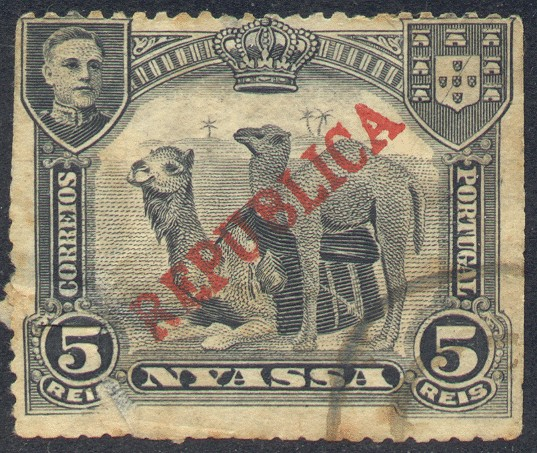
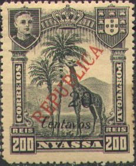
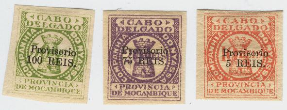

{kind=link}

Return To Catalogue - Portuguese Nyassaland, part 1 - Mozambique - Portugal
Note: on my website many of the
pictures can not be seen! They are of course present in the
catalogue;
contact me if you want to purchase the catalogue.
camel type
2 1/2 r brown and black 5 r black 10 r green and black
Value of the stamps |
|||
vc = very common c = common * = not so common ** = uncommon |
*** = very uncommon R = rare RR = very rare RRR = extremely rare |
||
| Value | Unused | Used | Remarks |
| 2 1/2 r | c | c | |
| 5 r | c | c | |
| 10 r | c | c | |
Zebra type

20 r red and black 25 r brown and black 50 r blue and blac
Value of the stamps |
|||
vc = very common c = common * = not so common ** = uncommon |
*** = very uncommon R = rare RR = very rare RRR = extremely rare |
||
| Value | Unused | Used | Remarks |
| 20 r | * | * | |
| 25 r | * | * | |
| 50 r | * | * | |
Giraffe type
75 r brown and black 100 r brown and black on green 200 r olive and black on red
Value of the stamps |
|||
vc = very common c = common * = not so common ** = uncommon |
*** = very uncommon R = rare RR = very rare RRR = extremely rare |
||
| Value | Unused | Used | Remarks |
| 75 r | * | * | |
| 100 r | * | * | |
| 200 r | * | * | |
Ship type

300 r black on blue 400 r brown and black 500 r olive and brown
Value of the stamps |
|||
vc = very common c = common * = not so common ** = uncommon |
*** = very uncommon R = rare RR = very rare RRR = extremely rare |
||
| Value | Unused | Used | Remarks |
| 300 r | * | * | |
| 400 r | ** | ** | |
| 500 r | ** | ** | |
Surcharged in centavos and overprinted 'REPUBLICA'



1/4 c on 2 1/2 r violet and black 1/2 c on 5 r black 1 c on 10 r green and black 1 1/2 c on 300 r black on blue 2 c on 20 r red and black 2 1/2 c on 25 r brown and black 3 c on 400 r brown and black 5 c on 50 r blue and black 7 1/2 c on 75 r brown and black 10 c on 100 r brown and black on green 12 c on 500 r olive and brown 20 c on 200 r olive and black on red
Specialists distinghuish two types of surcharges for each value.
Value of the stamps |
|||
vc = very common c = common * = not so common ** = uncommon |
*** = very uncommon R = rare RR = very rare RRR = extremely rare |
||
| Value | Unused | Used | Remarks |
| 1/4 c on 2 1/2 r | ** | ** | |
| 1/2 c on 5 r | ** | ** | |
| 1 c on 10 r | ** | ** | |
| 1 1/2 c on 300 r | ** | ** | |
| 2 c on 20 r | ** | ** | |
| 2 1/2 c on 25 r | ** | ** | |
| 3 c on 400 r | ** | ** | |
| 5 c on 50 r | ** | ** | |
| 7 1/2 c on 75 r | ** | ** | |
| 10 c on 100 r | ** | ** | |
| 12 c on 500 r | ** | ** | |
| 20 c on 200 r | ** | ** | |
Giraffe

1/4 c red 1/2 c grey 1 c green and black 1 1/2 c black and yellow Vasco da Gama

2 c red and black 2 1/2 c black and green 4 c black and orange 5 c blue and black 6 c black and lilac Sailship
7 1/2 c black and brown 8 c black and olive 10 c black and brown 15 c black and red 20 c black and blue Zebra
30 c black and brown 40 c black and lilac 50 c black and green 1 E balck and brown Sailship (other design)
2 E brown and black 5 E blue and brown
1/2 c green (giraffe) 1 c grey (giraffe) 2 c red (zebra) 3 c orange (zebra) 5 c brown (ship) 6 c brown (ship) 10 c lilac (ship) 20 c red (Vasco da Gama) 50 c violet (Vasco da Gama) This issue was probably just issued for stamp collectors.
15 c brown (portrait of Pombal) 15 c brown(Pombal shows rebuilding plan) 15 c brown (statue) With addtional inscription 'MULTA' (postage due) 30 c brown (portrait of Pombal) 30 c brown (Pombal shows rebuilding plan) 30 c brown (statue)
Many Portuguese colonies also issued similar stamps (in other colours). Click here for more information.
Similar stamps without overprint from Mocambique.
1894 Inscription 'CABO DELGADO COMPANHIA DO NYASSA PROVINCIA DE MOCAMBIQUE', tower

These stamps exist perforated 14 and imperforate, 10 r red and 20 r violet and 50 r green. Furthermore the whole serie exits with overprint 'Provisorio' (imperforate and perforated) and surcharged: 5 r on 10 r red, 75 r on 20 r violet and 100 r on 50 r green.
Example:
(Fiscal stamp of Mozambique overprinted 'NYASSA', reduced size)
In the above design I have seen the values: 10 r, 20 r, 30 r, 50 r, 60 r, 100 r, 200 r, 300 r, 500 r and 1$000 (all in the colours green, value in red and with yellow underprint).
Stamps - Selos - Briefmarken - Timbres-Poste - Postzegels - Francobolli - Estampillas